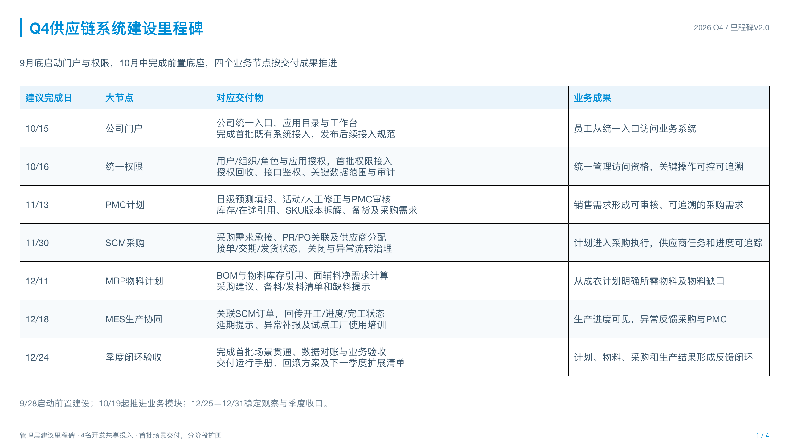
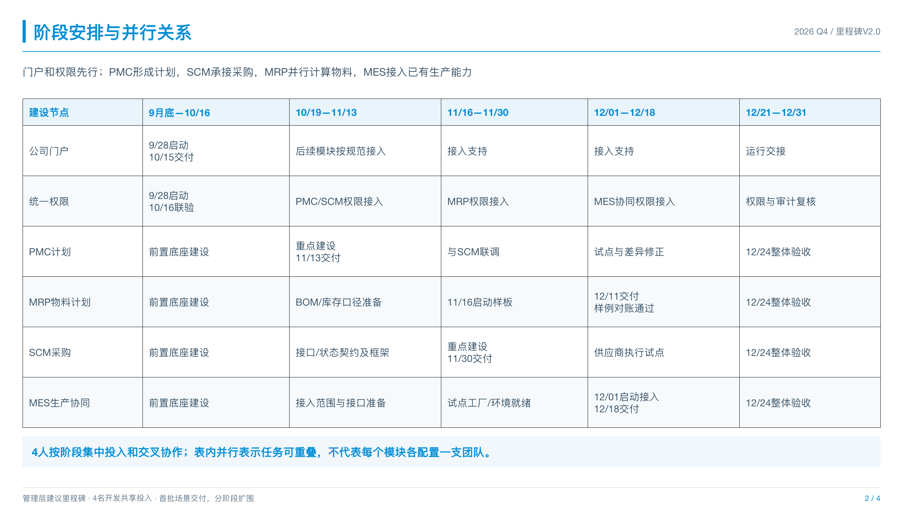
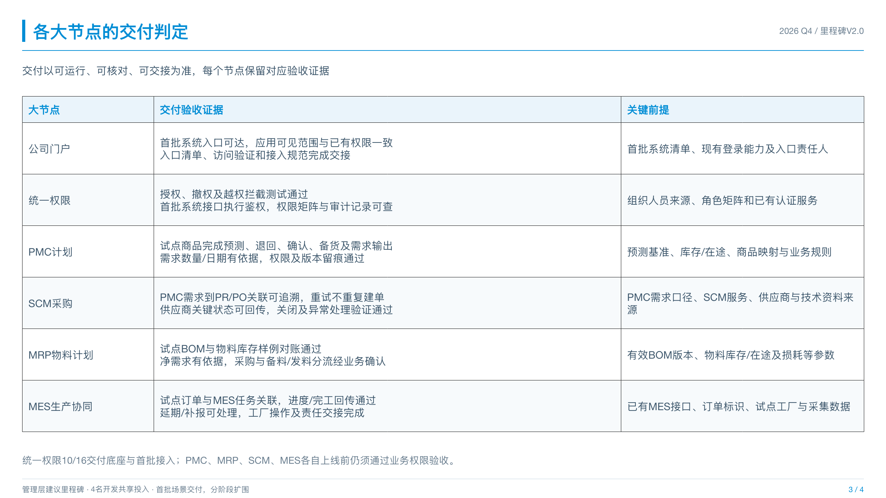
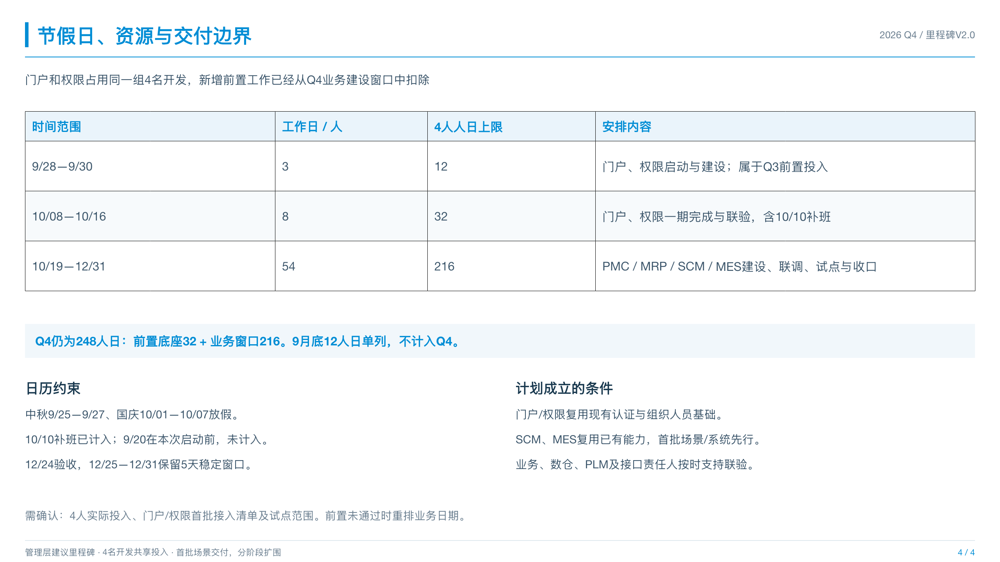

<!doctype html><html lang="zh-CN"><meta charset="utf-8"><meta name="viewport" content="width=device-width,initial-scale=1"><title>Q4供应链里程碑汇报</title><style>body{margin:0;background:#f3f6f8;color:#18384e;font:16px/1.7 -apple-system,'PingFang SC',sans-serif}header,main{max-width:1340px;margin:auto;padding:24px}h1{font-size:27px;margin:0}a{color:#007dbd;margin-right:24px}section{background:white;margin-bottom:28px;border:1px solid #d5e1e9}h2{font-size:18px;margin:12px 20px}img{display:block;width:100%}</style><header><h1>Q4供应链建设里程碑 · 管理层汇报版</h1><p>两项前置交付 + PMC / MRP / SCM / MES四个业务节点 + 季度验收</p><a href="可编辑文件/2026年Q4供应链建设里程碑_管理层汇报_V2.0.pptx">可编辑PPTX</a><a href="Q4里程碑汇报.md">完整文字稿</a><a href="预览图片/01.png">里程碑一页图</a></header><main><section><h2>1. Q4供应链系统建设里程碑</h2></section><section><h2>2. 阶段安排与并行关系</h2></section><section><h2>3. 各大节点的交付判定</h2></section><section><h2>4. 节假日、资源与交付边界</h2></section></main></html>